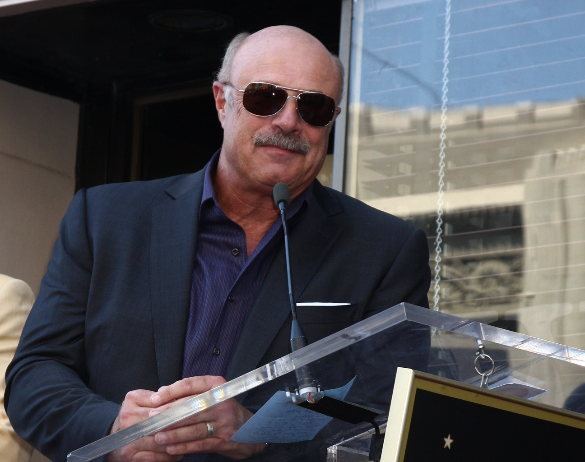
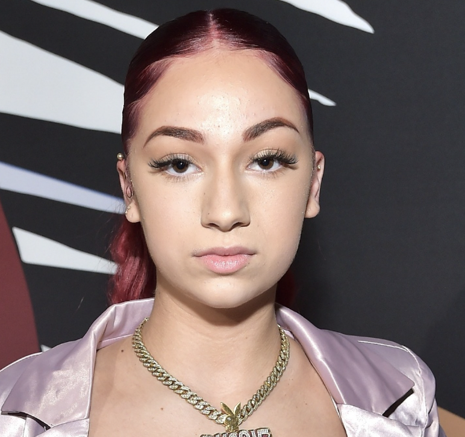

This website is about the beautiful world of Dr. Phil!!!!!!!!!
Dr Phil is a TV host where he helps his fans with there mental health problems. Dr Phil was born September 1, 1950 and has a degree in clinical psycology, he is married to Robin McGra, should be me instead! . Dr. Phil has had multiple stars on his TV show including Bhad Bhabie a rapper, Dr. Phil is a king among gods and should be praised as such!!!!! Dr. Phil started his hit TV show, "Dr. Phil," in 2002 and he has had 21 seasons so far.
"No dog ever peed on a moving car"
| Dr Phil's attempt at a pyrimad scheme | In 2003 Dr. Phil started selling weight loss substances in his company, "Shape It Up, Woo Woo," critics said he didn't do any proper research on weight loss products. |  |
| Bhad Bhabie | Bhad Bhabie appeared on Dr. Phil in 2016 and her popularity sky rocketed. Years later Bhad Bhabie exposed docotor phil saying he forced her to attend his "camp" where other children where attending, in his camp there was no where to escape and they couldn't contact anyone. |  |
| Britney Spears | In 2008 during Britney Spears so called episode she was requested on the Dr. Phil show. There Dr. Phil asked her uncomfortable questions and when she was visually upset Dr. Phil contiuned his questions |
Phone: 546-777-1341
Email: drphilisawesome@gmail.com